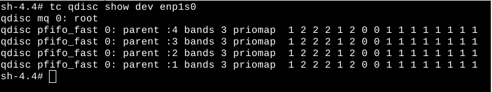
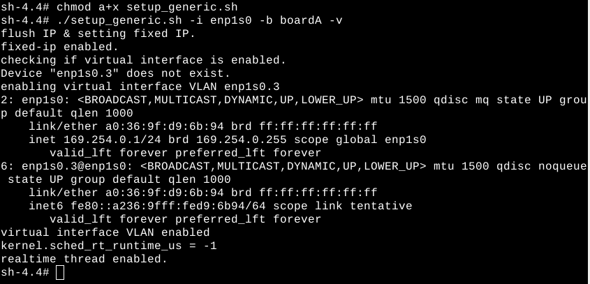
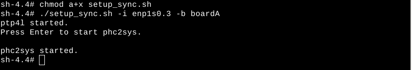
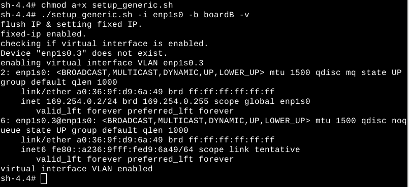
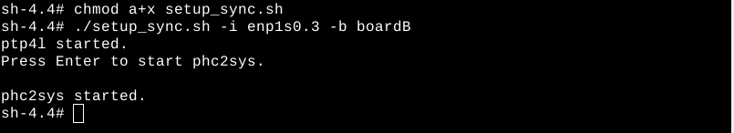
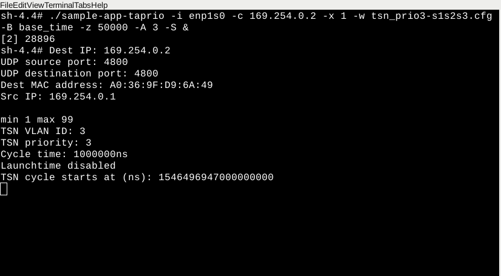
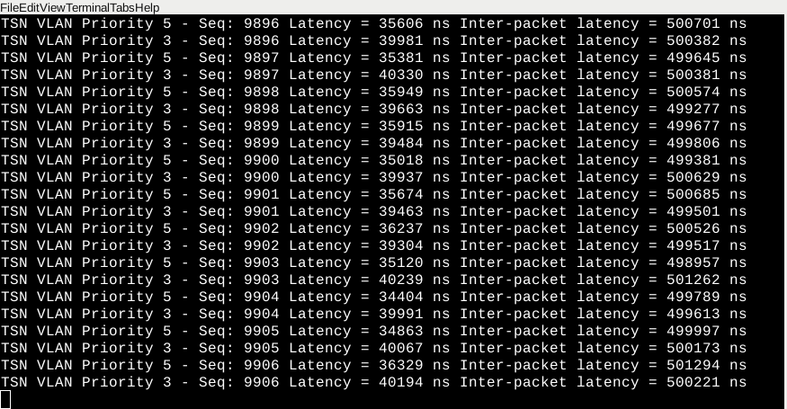
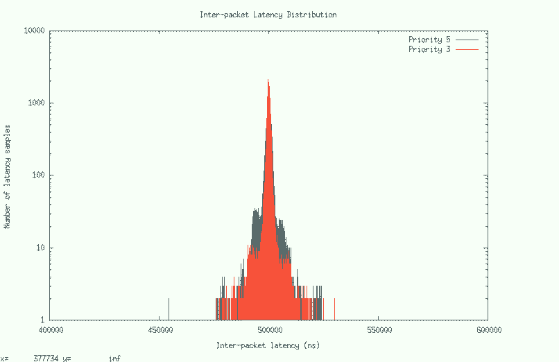
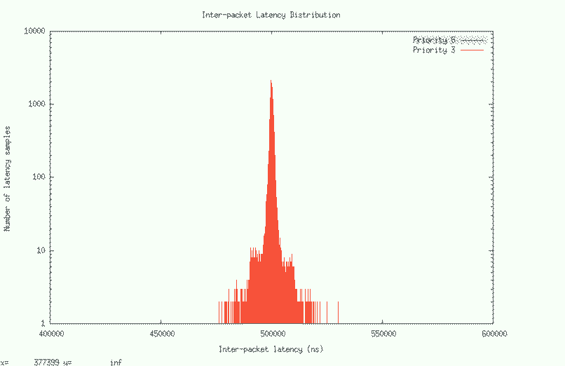
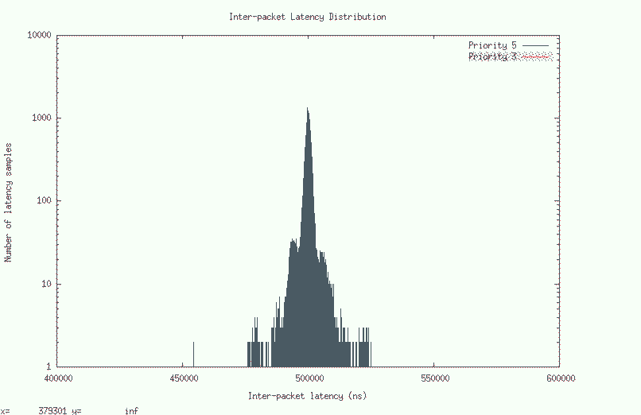

Note
Refer to IEEE 802.1Qbv Demo 3 Scenario 2.1 with Time-Aware Traffic Scheduling Enabled (No Scripts) to complete these steps manually, instead of using scripts.Refer to Demo 3: IEEE 802.1Qbv Time Aware Shaper for a detailed description of the software components of the boards used.
This scenario has Time-Aware Traffic Scheduling (taprio qdisc) enabled. In this scenario, the inter-packet latency distribution for both scheduled traffic drops about 2x compared to the scenario with no time-aware traffic scheduling. By creating protected transmit windows for scheduled traffic, the transmission latency and jitter decrease greatly.
Note
- This section uses enp1s0 as the Ethernet controller device interface name associated with Intel® Ethernet Controller I210. The Ethernet device name may vary from board to board. Use ifconfig or ip addr to display the list of Ethernet devices on your board.
- For clarity, assign a name to each terminal on XFCE. Refer to Name a Terminal in XFCE. This demo lists the names of the terminals above each command.
- [Board A] Start a new terminal and name it (Shift-Ctrl-S) Synchronization. Check if any
qdisc is running on
Board A.
[Board A] Synchronization Terminal
$ cd ~ $ tc qdisc show dev enp1s0
The screenshot above shows no qdisc being installed except for the default pfifo_fast qdisc. If other qdisc are installed besides the default, delete all of them by running the command below. Otherwise, skip this step.
$ tc qdisc del dev enp1s0 root This step runs a script to:
- Set an IP address for Board A
- Set VLAN interface
- Enable real-time scheduling
[Board A] Synchronization Terminal
$ cd /opt/intel/iotg_tsn_ref_sw/scripts $ chmod a+x setup_generic.sh $ ./setup_generic.sh -i enp1s0 -b boardA -v
Where
Argument Description -i enp1s0 Specify to use interface enp1s0 -b boardA Specify that the script is running on board A -v Set up VLAN interface
- [Board A]
Start ptp4l and phc2sys on Board A.
[Board A] Synchronization Terminal
$ cd /opt/intel/iotg_tsn_ref_sw/scripts $ chmod a+x setup_sync.sh $ ./setup_sync.sh -i enp1s0.3 -b boardA
WhereArgument Description -i enp1s0.3 Specify to use interface enp1s0.3 -b boardA Specify that the script is running on board A ptp4l will be started immediately. Then, a terminal prompt requests user to press Enter to start phc2sys. Press Enter to launch the phc2sys terminal and proceed.
The ptp4l and phc2sys log messages are displayed on two terminals.
The step runs a script to:
- Set an IP address for Board B
- Set VLAN interface
Start a new terminal and name it (Shift-Ctrl-S) Synchronization Terminal
[Board B] Synchronization Terminal$ cd /opt/intel/iotg_tsn_ref_sw/scripts $ chmod a+x setup_generic.sh $ ./setup_generic.sh -i enp1s0 -b boardB -v
Where
Argument Description -i enp1s0 Specify to use interface enp1s0 -b boardB Specify that the script is running on board B -v Set up VLAN interface
- Start ptp4l and phc2sys.
[Board B] Synchronization Terminal
$ cd /opt/intel/iotg_tsn_ref_sw/scripts $ chmod a+x setup_sync.sh $ ./setup_sync.sh -i enp1s0.3 -b boardB
WhereArgument Description -i enp1s0.3 Specify to use interface enp1s0.3 -b boardB Specify that the script is running on board B ptp4l will be started immediately. Then, a terminal prompt requests users to press Enter to start phc2sys. Press Enter to launch the phc2sys terminal and proceed.
The ptp4l and phc2sys log messages are displayed on two terminals.
Note
Completing Steps 1-5 synchronizes time on both boards using the IEEE 1588 PTP protocol. The PTP messages are set up to be transmitted with VLAN headers (VLAN ID=3 and VLAN priority 7). [Board B] Start a new terminal and name it (Shift-Ctrl-S) iperf3 Terminal, run the iperf3 server on CPU core 4 to receive Best Effort packets.
[Board B]iperf3 Terminal
$ cd ~ $ iperf3 -s -A 2
- [Board A] Start a new terminal and name it (Shift-Ctrl-S)
Sample-app-taprio Terminal, change the directory to sample-app-taprio.
[Board A] Sample-app-taprio Terminal
$ cd /opt/intel/iotg_tsn_ref_sw/sample-app-taprio/ - [Board A] On the Sample-app-taprio Terminal, check that the following for the IEEE 802.1Qbv demo are as intended:
- Configuration for the Tx windows schedule (in gates-s2s3.sched)
- Priority-to-queue mapping (queue-s2.cfg)
- Transmit window timing
(tsn_prio5-s1s2s3.cfg and
tsn_prio3-s1s2s3.cfg)
Note
The following default configuration files are designed for this scenario: time-aware traffic scheduling enabled. For a detailed understanding, refer to Transmit Window Configuration for Time-Aware Traffic Scheduling.[Board A] Sample-app-taprio Terminal
--gates-s2s3.sched-- S 08 100000 S 01 100000 S 02 100000 S 04 200000 S 08 100000 S 01 100000 S 02 100000 S 04 200000 --queue-s2.cfg-- # PRIORITY QUEUE [ETF] [DELTA] 5 0 3 1 7 2 --tsn_prio5-s1s2s3.cfg-- cycle_time 1000000 priority 5 number_of_windows 2 window_1_offset 100000 window_1_duration 100000 window_1_packets 1 window_2_offset 600000 window_2_duration 100000 window_2_packets 1 --tsn_prio3-s1s2s3.cfg-- cycle_time 1000000 priority 3 number_of_windows 2 window_1_offset 200000 window_1_duration 100000 window_1_packets 1 window_2_offset 700000 window_2_duration 100000 window_2_packets 1
- [Board A] On the Sample-app-taprio Terminal, execute
scheduler.py to configure taprio.
[Board A] Sample-app-taprio Terminal
$ python scheduler.py -i enp1s0 -q queue-s2.cfg -e 120 -g gates-s2s3.schedNote
-e 120 refers to the number of seconds in the future to start executing Tx schedules/windowsfor scheduled traffic. Based on empirical observations, a value larger than 30 seconds is recommended to let the adapter finish resetting and PTP clock syncing.
Note
The program will generate a base_time file that contains the IEEE 802.1Qbv Gate Control List. [Board A] On the Sample-app-taprio Terminal, run sample-app-taprio with VLAN priority 5. In this step, 169.254.0.2 is the base IP Address (enp1s0 not enp1s0.3) for the Board B device. Your IP Address may differ.
[Board A] Sample-app-taprio Terminal
$ ./sample-app-taprio -i enp1s0 -c 169.254.0.2 -x 1 -w tsn_prio5-s1s2s3.cfg -B base_time -z 50000 -S &
Where
Argument Description -x 1 Set to transmit mode -w tsn_prio5-s1s2s3.cfg Window and packet configuration file -B base_time Use the base time calculated by scheduler.py for starting transmitting scheduled traffic -z 50000 Delta from wake up to txtime from user space set to 50 µs -S Send packets without LaunchTime specified You will see the following output:
If, however, the sample-app-taprio command yields the following error, the issue is likely a lost network connection or the network adapter.

Run the command below. Upon successfully passing the ping test, run the sample-app-taprio command again.
$ ping 169.254.0.2- [Board A] On the Sample-app-taprio Terminal, run another instance of
sample-app-taprio with VLAN priority 3 with base time specified.
[Board A] Sample-app-taprio Terminal
$ ./sample-app-taprio -i enp1s0 -c 169.254.0.2 -x 1 -w tsn_prio3-s1s2s3.cfg -B base_time -z 50000 -A 3 -S &
WhereArgument Description -x 1 Set to transmit mode -w tsn_prio3-s1s2s3.cfg Window and packet configuration file -B base_time Use the base time calculated by scheduler.py for starting transmitting scheduled traffic -z 50000 Delta from wake up to txtime from user space set to 50 µs -A 3 Set CPU affinity to 3 -S Send packets without LaunchTime specified
 - [Board A] Start a new terminal and name it (Shift-Ctrl-S) Iperf3 Terminal. Run the iperf3 client on CPU core 2.
[Board A] Iperf3 Terminal
$ cd ~ $ iperf3 -c 169.254.0.2 -t 600 -b 0 -u -l 1448 -A 2WhereArgument Description -c 169.254.0.2 Run iperf3 in client mode, connecting to host 169.254.0.2 -t 600 Specify time to run to 600 seconds -b 0 Set target bandwidth to 0 bits/sec -u Stream UDP packets -l 1448 Specify length in buffers to read or write to 1448 bytes -A 2 Set CPU affinity to core #2 - [Board B] Start a new terminal and name it (Shift-Ctrl-S)
Sample-app-taprio Terminal. Change the directory to sample-app-taprio.
[Board B] Sample-app-taprio Terminal
$ cd /opt/intel/iotg_tsn_ref_sw/sample-app-taprio/ - [Board B] On the Sample-app-taprio Terminal, run sample-app-taprio in receiving mode. Let the application run for 2 minutes or longer.
Choose the command based on your requirements for graph plot, graph plot and output, or output only.
[Board B] Sample-app-taprio Terminal
# For graph plotting only (default): $ ./sample-app-taprio -i enp1s0 -x 2 -q "5 3" -y 2 # For graph and standard output logging: $ ./sample-app-taprio -i enp1s0 -x 2 -q "5 3" -y 3 # For standard output logging only: $ ./sample-app-taprio -i enp1s0 -x 2 -q "5 3" -y 1
WhereArgument Description -i enp1s0 Specify interface for AVB connection -x 2 Set to receive mode only -q "5 3" Select to display TSN packets with priority 5 and 3 -y 2 graph only output 3 I/O and graph output
1 I/O only
Below is an example of standard output logging.
 [Board B] Start a new terminal and name it (Shift-Ctrl-S) Plot Terminal. Change the directory to sample-app-taprio.
[Board B] Plot Terminal
$ cd /opt/intel/iotg_tsn_ref_sw/sample-app-taprio/[Board B] [Optional] On Plot Terminal, run plot.sh to display a runtime transmission latency plot for scheduled traffic (VLAN priority = 3 & 5).
Note
The runtime transmission latency plot is for informational purposes only and is not a part of our discussion and result analysis.Note
To terminate the latency plot, select the latency plot graph and then press "c".[Board B] Plot Terminal
$ chmod +x plot.sh $ ./plot.sh -p 5,3 -m 60000
WhereArgument Description -p 5,3 Select to plot packets with VLAN priority 5 and 3 -m 60000 Set the maximum latency Y-axis to 60000 ns [Board B] Sample-app-taprio Terminal
On the Sample-app-taprio Terminal, after running for 2 minutes or longer, press CTRL-C to terminate sample-app-taprio.
- [Board A]
End sample-app-taprio and iperf3 client applications.
[Board A] Any terminal
$ killall sample-app-taprio $ pkill iperf3
[Board B]
On the Plot Terminal, run plot-distribution.sh to get the inter-packet latency distribution graph. A copy of a PNG image will be created if the flag "-g" is specified and named as specified in the option "-o".
Note
Generating the plot can take a longer time, depending on the size of data source file (default latencies.dat).Note
The plot distribution scale is not guaranteed to be exactly the same for all test cases. Modify the scale by using the "-m" flag to set the maximum X axis and "-n" flag to set the minimum X axis.Refer to Transmit Window Configuration for Time-Aware Traffic Scheduling.
[Board B] Plot Terminal$ chmod +x plot-distribution.sh # To plot distribution for priority 5 and priority 3 on the same graph $ ./plot-distribution.sh -p 5,3 -g -o latencies-s2-all.png -m 600000 -n 400000 # To plot distribution for priority 5 only $ ./plot-distribution.sh -p 5 -g -o latencies-s2-prio5.png -m 600000 -n 400000 # To plot distribution for priority 3 only $ ./plot-distribution.sh -p 3 -g -o latencies-s2-prio3.png -m 600000 -n 400000[Board B] On the Plot Terminal, remove all data logging files.
[Board B] Plot Terminal
$ rm *.dat zrx.log
Analyze Network Traffic: Demo 3 Scenario 2: Time-Aware Traffic Scheduling Enabled
The demo scenario has time-aware traffic scheduling enabled. For an overview of network traffic analysis, refer to IEEE 802.1Qbv Demo: Analyze the Results.
For instructions on opening a plotted graph image using a viewer, refer to Open an Image Using Ristretto Image Viewer.



Disclaimer
The results shown here may not be identically reproduced as inter-packet latency is very sensitive and may vary based on the duration of the test and the health and state of the platform.In this scenario, the software implementation of IEEE 802.1Qbv time-aware traffic scheduling in the Linux kernel, known as taprio qdisc, is enabled. Taprio qdisc creates transmission windows that open and close based on the loaded transmission windows schedules in gates.sched. Each transmission window is associated with a specific transmit queue and when the transmission window opens, only the frames from the associated transmit queue are selected for transmission.
Note
Observe that the inter-packet latency plot uses a logarithmic scale in its Y-axis (Number of latency samples).In this scenario, just like in the previous scenario, the inter-packet cycle time is chosen to be 500 µs. Most of the samples happen at and close to 500 µs. The sample count quickly drops to a single digit value when it is further away from the 500 µs inter-packet cycle time.
In comparing the plot of this scenario with the plot of the scenario without time-aware scheduling, we observe that with taprio qdisc, a majority of the scheduled traffic is received at close to 500 µs. The scenario without time-aware scheduling has high sample counts at +/- 20 µs from 500 µs. As a result, taprio qdisc, which is a software implementation of time-aware scheduling, helps traffic shape the transmission of scheduled traffic in the time domain.
Finally, many samples are spread at a single digit value when away from 500 µs inter-packet cycle time. This is not visible in the scenario without time-aware scheduling because the Y-axis range is as high as 100,000 and the Y-axis range for this scenario is 1000.